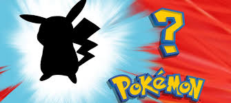

Pokémon
Pokémon tomou proporções tão grandes em seus 25 anos de história, que é quase irônico pensar que tudo começou com Satoshi Tajiri, criador da série, colecionando insetos em sua infância. A paixão por criaturas únicas permaneceu com o japonês até a vida adulta, e deu vida a uma das maiores franquias do mundo do entretenimento. Claro, o ponto de partida foi nos jogos de Game Boy, mas Pokémon tem uma trajetória que se expande para as mais diferentes mídias: desenhos, quadrinhos, filmes animados e em live-action, jogos de carta, incontáveis brinquedos colecionáveis e por aí vai. Os monstrinhos de bolso tomaram o mundo de inúmeras maneiras e seguem crescendo.

Em um primeiro momento, o conceito de Pokémon não foi muito bem entendido pelos executivos da Nintendo. Na verdade, Tajiri tentou vender o projeto algumas vezes para a empresa ao longo de seis anos, mas só obteve resposta positiva quando teve a ajuda de ninguém menos que Shigeru Miyamoto, criador de Mario. Ainda que extremamente simples olhando em retrospecto, os primeiros Pokémon eram um projeto ambicioso para a época. Era essencial que o game utilizasse o Cabo Link do Game Boy, para que os “insetos” pudessem ser transportados de um aparelho para o outro. Tajiri misturou esse conceito com as cápsulas de Ultraseven, que carregavam monstros gigantescos em um espaço muito pequeno, e assim nasceram os Pocket Monsters — que, originalmente, se chamavam Capsule Monsters.
